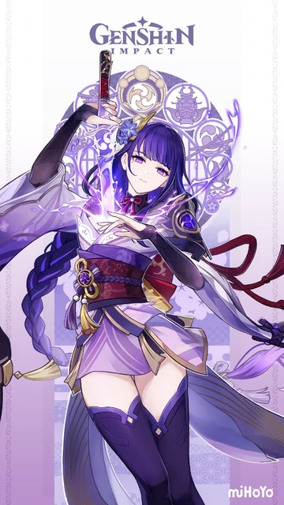

Inazuma · Character Records
Raiden Ei and the Shogun
Raiden Ei succeeded her twin Makoto as Inazuma’s Electro Archon and built the puppet Shogun to preserve an unchanging Eternity. After the Traveler challenged that doctrine, Ei resumed active rule; in Version 7.2 she also released primordial Electro power for Inazuma’s Trial of Usurpation.

Two sisters, one public ruler
Ei and her twin Makoto fought through the Archon War together. Makoto became the first Electro Archon and established the Shogunate; Ei acted as her Kagemusha, a shadow warrior and body double. Their public image was a single Raiden Shogun, which is why Baal and the title were associated with both sisters.
Makoto was Baal and Ei is Beelzebul. After Makoto died in the Cataclysm, Ei succeeded her as Inazuma’s Archon. Keep the sisters’ roles separate when reading older dialogue that uses the public name Baal.
The puppet and the Plane of Euthymia
To resist erosion, Ei created a puppet body to govern Inazuma and placed her own consciousness in an inner realm, the Plane of Euthymia. The Raiden Shogun follows fixed rules Ei programmed around her understanding of Eternity and has her own consciousness to enforce them.
This arrangement gave Ei distance from ordinary change, but it also left the puppet applying her old doctrine without the judgment Ei would later develop. The body, the puppet’s consciousness, and Ei herself are related but distinct parts of the story.
The decrees and Ei’s responsibility
The Vision Hunt Decree ordered Visions seized and placed in the Statue of the Omnipresent God; the Sakoku Decree closed Inazuma’s borders. Both served the Shogun’s fixed version of Eternity, while the Fatui worked through Tenryou Commissioner Kujou Takayuki to exploit the Vision Hunt for conflict and Delusion sales.
Ei was isolated inside the Plane, but the decree was not simply an accidental act by an unconnected puppet. She permitted the Vision Hunt to continue because she believed ambition threatened Eternity. The Traveler’s challenge, Yae Miko’s intervention, and the hopes represented by the confiscated Visions caused Ei to reconsider, and she abolished both decrees.
The final duel and a changed Eternity
In Transient Dreams, Ei returns to the outside world as Rifthounds attack the Sacred Sakura. The story revisits Makoto’s death and the planting of the tree before Ei enters the realm of Makoto’s consciousness, where the Shogun confronts her for changing the rules.
The puppet describes itself as the guardian of Ei’s former ideals and is built to resist erosion. Their conflict spans five centuries and ends when Ei demonstrates that she can embrace a future without abandoning her commitment to Inazuma. The Shogun accepts Ei’s resolve, and the sisters’ memory of Makoto helps Ei carry that change forward.
Version 7.2 and the primordial Electro power
During Inazuma’s Trial of Usurpation, Ei explains that she once sealed primordial Electro energy after killing the Thunderbird on Seirai. The seal had kept the nation’s thunderstorms under her control; the Hallowing begins to undo it and restore the old power’s connection to time.
Ei works with Xilonen and Neuvillette to upgrade the Shogun puppet so it can safely contain the released energy. She then uses her own strength together with that power to answer the trial. This is presented as a way to show that Inazuma’s Eternity has changed and can make room for the dragons, rather than as proof that Ei’s old seal was harmless.
The Thunderbird’s possible successor
Ei says elemental dragons can emerge again from the energy left behind after a dragon dies. She expects the Thunderbird’s power to take shape as conscious life over time and refers to the new being as an Electro Dragon.
The released dialogue leaves the future being’s identity and relationship to the original Thunderbird unsettled. Ei’s containment plan and offer of a chance to respond do not confirm that the same individual has already returned or reconciled with her.
This is an original CoreGG reading guide, not an official HoYoverse article or a reproduction of the game text. Source links below identify the records used so you can check the original context.
Sources & references
Check these sources for the original game text and reference trail.
- Omnipresence Over Mortals · Archon Quest transcript
- Transient Dreams · Raiden Shogun Story Quest transcript
- A Yesterday Sent From Beyond · Version 7.2 Archon Quest transcript
- Vision Hunt Decree · source comparison
- The Seven Archons · current Electro Archon record
- Genshin Impact Wiki · Ei source index